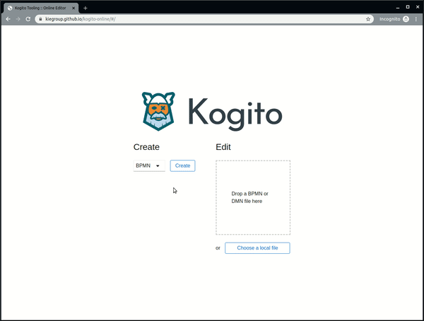
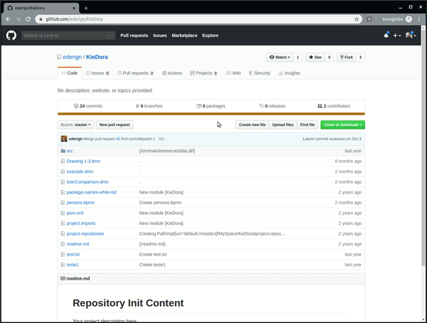

Kogito Online Editor is available now!
Kogito Online DMN/BPMN editor release
We are happy to announce that our team has published the first alpha release of our brand new Kogito Online Editor. It can be accessed here: http://kiegroup.github.io/kogito-online
What is the Kogito Online Editor?
The Kogito Online Editor provides a simple way to edit DMN and BPMN files directly on your browser. You can create a file from scratch or upload an existing one from your device. This first version includes:
- Downloading the modified file
- Renaming the file
- Editing files in full screen
- Opening a file from GitHub, editing it and going back to GitHub with a modified file (see details below)

Integration with the Kogito Chrome Extension
Users can open their files from their repositories and PRs directly in the new Kogito Online Editor. While editing a file in GitHub, you can open and edit it in the Online Editor. When you are done with your changes, you can go back to GitHub and commit it or open a pull request.

New features and improvements are in development, so stay tuned for the next releases!
Kogito Online Editor is available now! was originally published in kie-tooling on Medium, where people are continuing the conversation by highlighting and responding to this story.